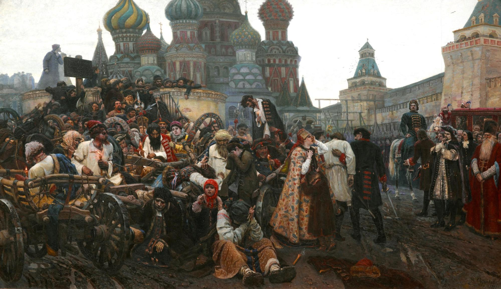

Peredvizhniki (Realist Art)

The Peredvizhniki is a group of Russian realist artists who challenged the restrictive character of the Russian Academy of Arts, which developed under Nicholas I (1825-1855) and widely persisted well after his reign despite reform efforts. It sought the emancipation of artists and the transformation of society through art. In Anna Karenina, the Peredivizhniki ideology is embodied by the painter Mikhailov, whom Anna and Vronsky visit during their time abroad in Italy. The novel’s scenes with Mikhailov are essential to understanding Tolstoy’s own perspectives on art.
Nicholas I believed that the Russian Academy of Arts would function much better under a more bureaucratic system, which entailed the rigorous enforcement of government regulations. Valkenier summarizes that during Nicholas I’s reign, which lasted from 1825 to 1855, “the Academy was transformed into an instrument that molded artists into servitors of the state, subordinated art to the needs and tastes of the Court and controlled artistic life throughout the country” (Valkenier 4). Nicholas I created an extensive hierarchy among graduating artists (the Amendment of 1840), as well as a system of rewarding artists for skillfully doing the government's bidding and punishing those who didn’t. Nicholas I’s successor, Alexander II, liberalized the Academy of Arts from the harsh clutches of the government, and Fedor Lvov was appointed as its Conference Secretary. While Lvov attempted to change the Academy through the reform of 1859, it widely failed to “alter the relationship of the Academy to the Court or to lessen official control over artistic activities in the country” (Valkenier 10). This led to growing tension between the Academy and artists who sought a greater role in Russian culture rather than simply carrying out the government's wishes.
In his book What is Art?, Tolstoy sought to understand why humans devote immense labor to producing art by exploring the various lenses through which art is interpreted. He wrote,
"Art is not, as the metaphysicians say, the manifestation of some mysterious idea, beauty, God, not, as the aesthetician-physiologists say, a form of play in which man releases a surplus of stored-up energy; not the manifestation of emotions through external signs; not the production of pleasing objects; not, above all, pleasure, but is a means of human communion, necessary for life and for the movement towards the good of the individual man and of mankind, uniting them in the same feelings" (Tolstoy 35).
Therefore, Tolstoy believed that art is about forming a connection between the artist and the consumer; namely, one that would remold the individual and society by means of moving "towards the good." This is similar to the first-generation Peredvizhniki desire to "transform society through their creative work" (Valkenier 10). Both Tolstoy and the first-generation Peredvizhniki (e.g., Chernyshevsky, Kramskoy) believed that art should be useful to society, which is why these Peredvizhniki were so preoccupied with becoming part of the cultural elite (i.e., the intelligentsia). Tolstoy deemed that art is "one of the most necessary means of communication, without which mankind cannot live" (Tolstoy 36). In fact, Tolstoy parallels the capacity for understanding others' thoughts (through spoken and written word) to the capacity for "being infected by other people's feelings through art," suggesting that while thought unites humanity through the evolution of ideas, art too unites humanity through the evolution of feelings (Tolstoy 35).
Alexandrov, quite convincingly, argues that the passages with the artist whom Anna and Vronsky visit in Italy, Mikhailov, represent the “difficulty if not the impossibility of communicating a spiritual reality via an artistic medium” (Alexandrov 84). This is especially apparent through Vronsky’s observations on Mikhailov’s The Admonition of Pilat, in which he highlights his amazement at Mikhailov’s “technique” (Tolstoy 476). Mikhailov is “grated painfully” by this remark because, like Tolstoy, Mikhailov does not view being a true artist as merely having the “mechanical ability” to create something beautiful (Tolstoy 476). This also coincides with the Peredvizhniki’s rejection of the government’s emphasis on “training technicians who could fulfill Court commissions with skill and dispatch” (Valkenier 6).
The challenge of communicating through art introduces a tension between Tolstoy’s definition of art and the possibility that art fulfills its purpose. It is possible that Tolstoy felt apprehensive about whether his own works, including Anna Karenina, were capable of spiritually uniting humanity through shared feelings, and thus whether they qualified as art in his definition of the word.
Works Cited
- Alexandrov, V. Limits to Interpretation: The Meanings of Anna Karenina. University of Wisconsin Press, 2004.
- Tolstoy, Leo. Anna Karenina. Translated by Rosamund Bartlett, Oxford University Press, 2014.
- Tolstoy, Leo. What is Art? Translated by Richard Pevear and Larissa Volokhonsky, Penguin Group, 1995.
- Valkenier, E. Russian Realist Art: The Peredvizhniki and Their Tradition. Ardis, 1977.